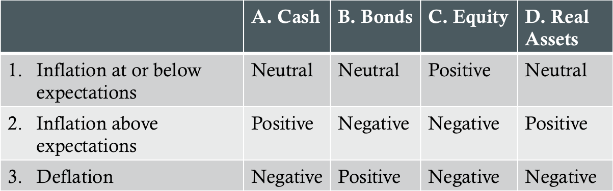
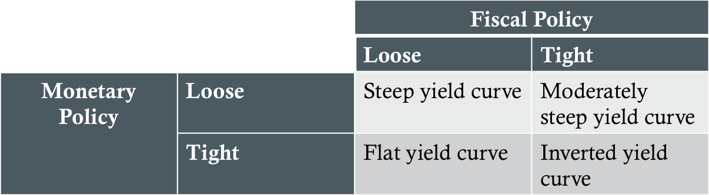
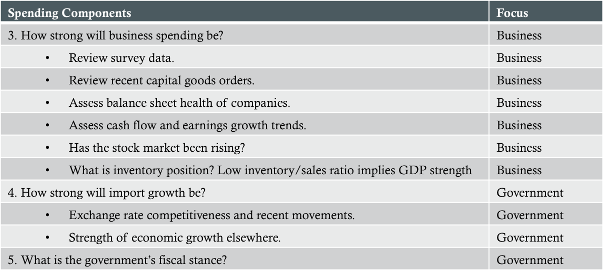
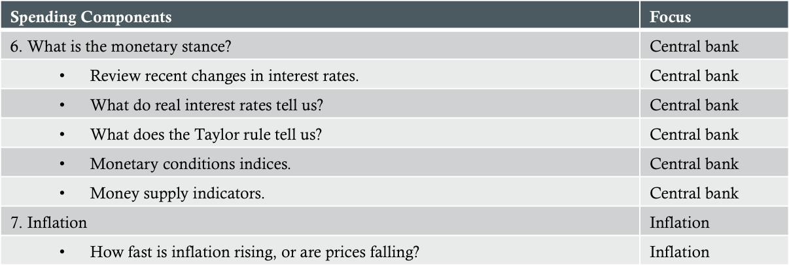
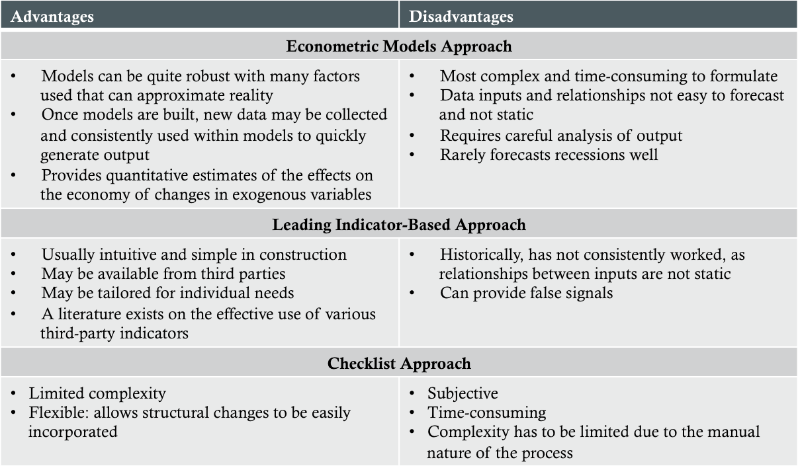

Introduction
Capital market expectations (CME) - investors' expectations concerning the risk and return prospects of asset classes
Macro expectations - expectations about classes of assets
Micro expectations - expectations concerning individual assets
Beta research - research related to systematic risk and returns to systematic risk
Alpha research - research related to capturing excess risk-adjusted returns by a particular strategy
A Framework for Developing CME
Specify the final set of expectations that are needed, including the time horizon to which they apply
Research the historical record
Specify the method(s) and/or model(s) that will be used and their information requirements
Determine best sources for information needs
Interpret current investment environment using selected data and methods, applying experience and judgment
Provide the set of expectations that are needed, documenting conclusions
Monitor actual outcomes and compare them to expectations, providing feedback to improve the expectations-setting process
Challenges in Forecasting
Limitations of economic data
Data measurement errors and biases
Transcription errors
Survivorship bias
Appraisal (smoothed) data
Limitations of historical estimates
Ex-post risk can be a biased measure of ex-ante risk
Biases in analysts' methods
Data-mining bias
Time-period bias
Failure to account for conditioning information
Misinterpretation of correlations
Psychological traps
Model and input uncertainty
The limitations of economic data may include time lags, revisions, and changes in definitions overtime. Some of the errors and biases present in data include (1) transcription errors: errors in gathering and recording data; (2) survivorship bias: arises when a data series reflects only entities that have survived to the end of the period; (3) appraisal (smoothed) data: for certain assets without liquid public markets, appraisal data are used in lieu of market price transaction data. The limitations of historical estimates include regime shifts (changing relationships between variables) and nonstationarity (different parts of a data series reflect different underlying statistical properties). Biases in analysts' methods include: (1) data-mining bias: repeatedly searching a dataset until a statistically significant pattern is found and (2) time-period bias: results that are time-period biased. Failure to account for conditioning information occurs when analysts do not take into account relevant new facts that may alter the probability of certain outcomes. Misinterpretation of correlations may include confusing correlation with causation. Psychological traps include the anchoring trap (the tendency of the mind to give disproportionate weight to the first information it receives on a topic), the status quo trap (the tendency for forecasts to perpetuate recent observations), the confirming evidence trap (the bias that leads individuals to give greater weight to information that supports an existing or preferred point of view than to evidence that contradicts it), the overconfidence trap (the tendency of individuals to overestiate the accuracy of their forecasts), the prudence trap (the tendency to temper forecasts so that they do not appear extreme), the recallability trap (the tendency of forecasts to be overly influenced by events that have left a strong impression on a person's memory. Model uncertainty is the uncertainty concerning whether a selected model is correct. Input uncertainty is the uncertainty concerning whether the inputs are correct.
Tools for Formulating CME
Statistical methods
Descriptive vs. inferential statistics
Historical sample approach
Shrinkage estimators
Time-series estimators
Multifactor models
Descriptive statistics are used to summarize data to describe important aspects of a dataset. Inferential statistics are methods for making estimates or forecasts about a larger group from an observed smaller group. A historical sample approach may include a mean-variance framework that uses sample mean return as an esimate for expected return, the sample variance as an estimate of variance, and the sample correlations as esimates of correlations. Shrinkage estimation involves taking a weighted average of a historical estimate of a parameter and some other parameter estimate, where the weights reflect the analyst's relative belief in the estimates. Time-series estimators involve forecasting a variable on the basis of lagged values of the variable being forecast and often lagged values of other selected variables. A multifactor model is a model that explains the returns to an asset in terms of the values of a set of return drivers or risk factors.
Tools for Formulating CME (cont'd)
DCF models: CFt /(1+r)t
Equity markets
Gordon (constant) growth model: E(Re )=D1 /P0 +g
Grinold-Kroner model: E(Re )≈D/P-ΔS+i+g+ΔPE
Fixed-income markets - YTM often used as discount rate
Risk premium (RP) approach: E(Ri )=RF +RP1 +...+RPK
Fixed-income RP: E(Rb = Real risk-free interest rate+Inflation premium+Default RP+Illiquidity premium+Maturity premium+Tax premium
Equity RP: E(Re )=YTM on LT gov't bond+Equity RP
Financial market equilibrium models
Survey and panel methods
The Gordon growth model: 'D1 ' = expected annual dividend per share, 'g' = the long-term growth rate in dividends, assumed equal to the long-term earnings growth rate, and 'P0 ' = current share price. Grinold-Kroner model: 'D/P' = expected dividend yield, 'ΔS' = expected % change in number of shares outstanding, 'i' = expected inflation rate, 'g' = expected real total earnings growth rate, 'ΔPE' = per period % change in the P/E multiple. The risk premium approach expresses the expected return on a risk asset as the sum of the risk-free rate of interest and one or more risk premiums that compensate investors for the risk asset's exposure to sources of priced risk. Fixed-income premium: (1) risk-free interest rate = single-period interest rate for a completely risk-free security if no inflation were expected, (2) inflation premium = compensates investor for expected inflation and represents the average inflation rate expected over the maturity of the debt plus a premium(discount) for the probability attached the higher(lower) inflation than expected, (3) default risk premium = compensates investors for probability of default, (4) illiquidity premium = compensates investors for risk of loss relative to fair value in case of quick sale, (5) maturity premium = compensates investors for increased sensitivity of the market value of debt to a change in market interest rates as maturity is extended. Financial market equilibrium models describe relationships between expected return and risk in which supply and demand are in balance. The survey method involves asking a group of experts for their expectations and using the responses in capital market formulation. If the queried group is relatively stable over time, this approach is called the panel method.
Economic Analysis
Inventory cycle - short-term, typically 2-4 years
Business cycle = long-term, typically 9-11 years
Primary measures of economic activity:
Gross domestic product (GDP) - the total value of final goods and services produced in the economy during a year
Output gap - the difference between the value of GDP estimated as if the economy were operating at its potential output and the actual value of GDP
Recession - a broad-based economic downturn
Inflation/Deflation Effects on Asset Classes

1A: Short-term yields steady or declining | 1B: Yield levels maintained; market in equilibrium | 1C: Bullish while market in equilibrium state | 1D: Cash flow steady or rising slightly. Returns equate to long-term average. Market in general equilibrium | 2A: Bias toward rising rates | 2B: Bias toward higher yields due to a higher inflation premium | 2C: High inflation a negative for financial assets. Less negative for companies/industries able to pass on inflated costs | 2D: Asset values increasing; increased cash flows and higher expected returns | 3A: Bias toward 0% short-term rates | 3B: Purchasing power increasing. Bias toward steady to lower rates (may be offset by increased risk of potential defaults due to falling asset prices) | 3C: Negative wealth effect slows demand. Especially affects asset-intensive, commodity-producing, and highly levered companies | 3D: Cash flows steady to falling. Asset prices face downward pressure
Factors Affecting the Business Cycle
Consumers
Business
Foreign trade
Gov't activity (monetary and fisal policy)
Consumer spending is often measured by retail sales and consumer consumption data. Employment growth and consumer confidence surveys are closesly tracked as well. Business activity is gauged by measuring investment and spending on inventories as well as various sentiment surveys such as the purchasing managers index (PMI). Monetary policy concerns gov't actions such as increasing money supply growth or changing short-term interest rates. Monetary authorities make decisions based on a variety of factors that include the pace of economic growth, the amount of excess capacity, the unemployment rate, and the inflation rate. Fiscal policy refers to gov't spending and/or tax rates that can be used to manipulate the budget deficit and influence the economy.
Policy Mix and the Yield Curve

The fiscal/monetary mix usually manifests itself in the shape of the yield curve
Permanent Income Hypothesis
Definition: Consumers' spending behavior is largely determined by their long-run income expectations. Thus, consumer trends are usually stable or even countercyclical over a business cycle
Temporary or unexpected one-time events, such as an inheritance, might temporarily increase an individual's demand for items that might not ordinarily be purchased but overall spending patterns remain largely determined by long-run expectations
Decomposing GDP Growth
Growth from labor inputs
Growth in potential labor force size
Growth in labor force participation rate
Growth from changes in labor productivity
Growth from capital inputs
Growth in total factor productivity (TFP)
TFP refers to technical progress resulting from increased efficiency using capital inputs
Government Structural Policies
Definition: Government policies that affect the limits of economic growth and incentives within the private sector
Elements of a pro-growth government structural policy:
Sound fiscal policy
Minimal public sector intrusion into the private sector
Encouraging competition within the private sector
Support for infrastructure and human capital development
Sound tax policies
1) Avoidance of the "twin deficits" problem (i.e. running a gov't budget deficit and current account deficit simultaneously. Avoidance of inflation induced by financing the deficit with printed money. Large budget deficits can "crowd out" private sector investment; 2) Labor market rules (i.e. restrictions on hiring and firing) can raise the structural level of unemployment; 3) Competition drives companies to be more efficient, boosts productivity growth and attracts foreign investment; 4) Often done in partnership with the private sector; 5) Simple, transparent, and rarely altered tax policies; low marginal tax rates; and a very broad tax base
Exogenous Shocks
Definition: Events from outside the economic system that affect its course
Exogenous shocks are, by definition, difficult/impossible to predict and typically not priced into the market and are only partially anticipated. They can affect the entire economy and often involve some degree of contagion. Common exogenous shocks are oil shocks and financial crises.
International Interactions
Macroeconomic linkages (e.g. foreign demand for exports, cross-border direct investment
Interest rate/exchange rate linkages (e.g. "pegged" exchange rates)
Emerging markets risk analysis
How sound is fiscal and monetary policy?
What are the economic growth prospects for the economy?
Is the currency competitive, and are the external accounts under control?
Is external debt under control?
Is liquidity plentiful?
Is the political situation supportive of required policies?
Pegged exchange rates is sometimes used to (1) reassure domestic businesses that exchange rates will not wildly fluctuate and (2) control inflation. However, the efficacy of this strategy is highly dependent on the level of confidence in the peg. Emerging markets require higher rates of investment than developed countries in physical capital, infrastructure and human capital but have inadequate domestic savings so are forced to rely heavily on foreign cpital
Econometric Modeling
Definition: The application of quantitative modeling and analysis grounded in economic theory to the analysis of economic data
Steps:
A model of the economy is created based on variables suggested by theory
Optimization using historical data is used to estimate the parameters of the equations
This estimated system of equations is used to forecast the future values of economic variables
Economic Indicators
Definition: Economic statistics provided by government and established private organizations that contain information on an economy's recent past activity or its current or future position in the business cycle
Lagging vs. leading economic indicators
Lagging and coincident economic indicators are indicators of recent past and current economic activity. Leading indicators are variables that vary with the business cycle but at a fairly consistent time interval before a turn in the business cycle
Checklist Approach (cont'd)

Checklist Approach (cont'd)

Advantages/Disadvantages
